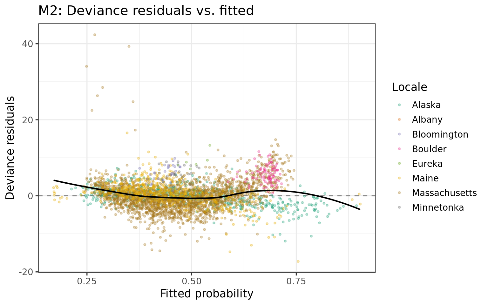
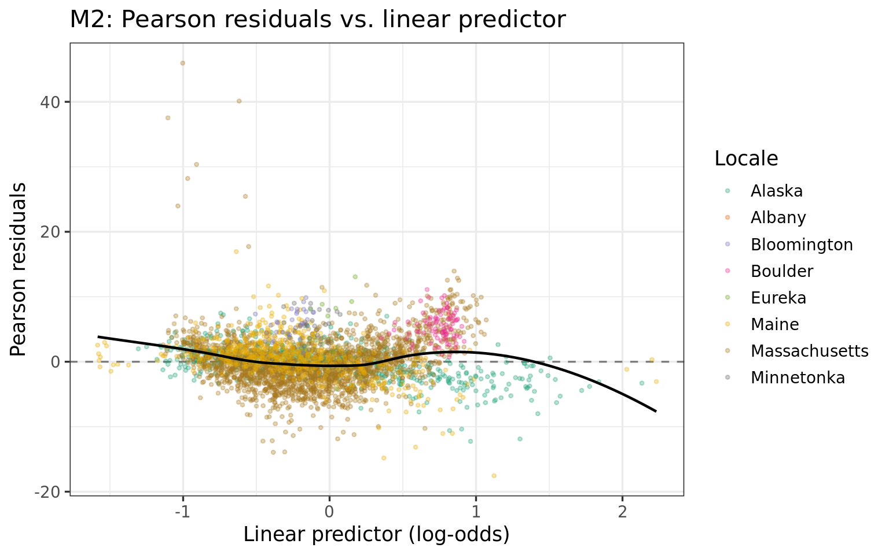
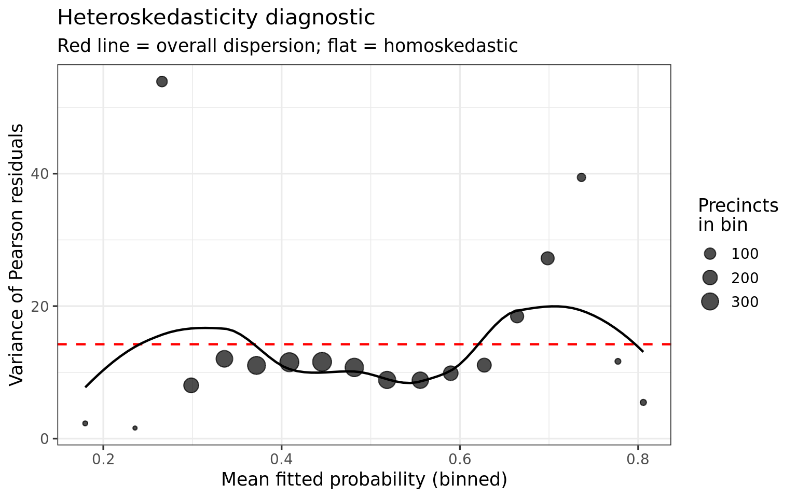
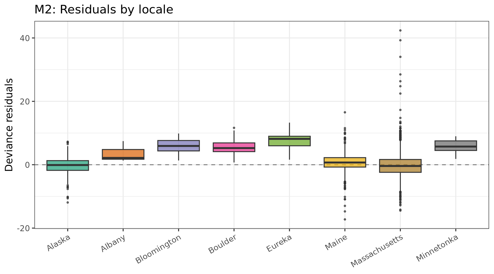
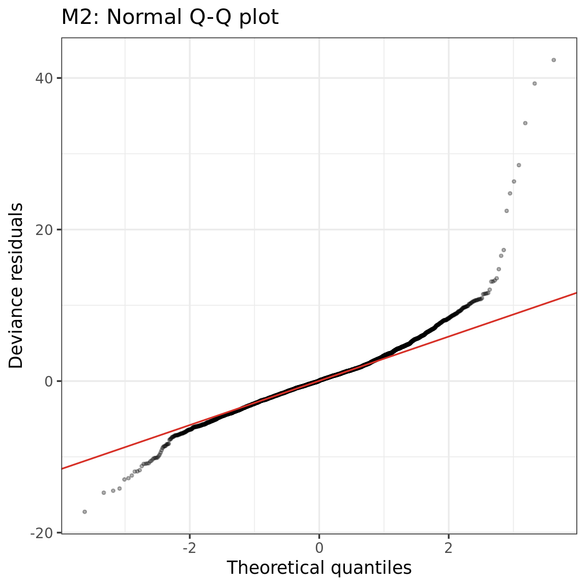
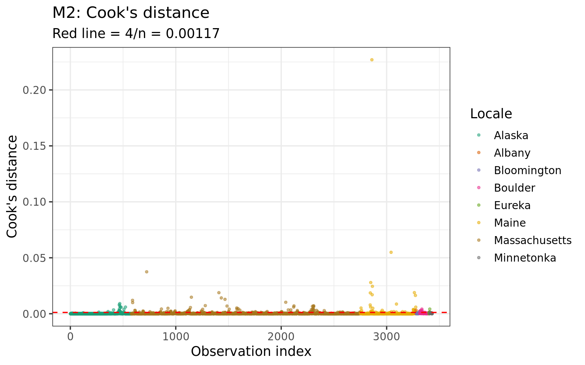
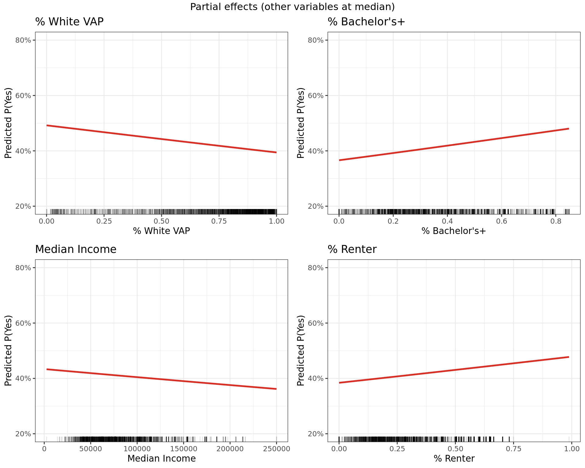

library(dplyr)
library(ggplot2)
library(scales)
library(knitr)
library(broom)
load("../data/model_results.RData")Regression Diagnostics
Diagnostics on single-imputation fits (imputation 1) of the quasibinomial GLM with demographic controls (M2). Pooled estimates across all 5 imputations are substantively identical.
1. Deviance residuals vs. fitted
diag_data$.dev_resid <- residuals(diag_m2, type = "deviance")
diag_data$.fitted_p <- fitted(diag_m2)
ggplot(diag_data, aes(x = .fitted_p, y = .dev_resid)) +
geom_hline(yintercept = 0, color = "grey50", linetype = "dashed") +
geom_point(aes(color = locale), alpha = 0.3, size = 0.8) +
geom_smooth(method = "loess", se = FALSE, color = "black", linewidth = 0.8) +
scale_color_brewer(palette = "Dark2") +
labs(x = "Fitted probability", y = "Deviance residuals",
title = "M2: Deviance residuals vs. fitted", color = "Locale") +
theme_bw(base_size = 13)
2. Pearson residuals vs. linear predictor
diag_data$.pearson <- residuals(diag_m2, type = "pearson")
diag_data$.eta <- predict(diag_m2, type = "link")
ggplot(diag_data, aes(x = .eta, y = .pearson)) +
geom_hline(yintercept = 0, color = "grey50", linetype = "dashed") +
geom_point(aes(color = locale), alpha = 0.3, size = 0.8) +
geom_smooth(method = "loess", se = FALSE, color = "black", linewidth = 0.8) +
scale_color_brewer(palette = "Dark2") +
labs(x = "Linear predictor (log-odds)", y = "Pearson residuals",
title = "M2: Pearson residuals vs. linear predictor",
color = "Locale") +
theme_bw(base_size = 13)
3. Overdispersion
disp <- deviance(diag_m2) / df.residual(diag_m2)
cat("Dispersion parameter (deviance/df):", round(disp, 2), "\n\n")Dispersion parameter (deviance/df): 14.25 cat("Values >> 1 indicate overdispersion, expected in aggregate vote data\n")Values >> 1 indicate overdispersion, expected in aggregate vote datacat("(voters within a precinct are correlated, not independent Bernoulli trials).\n")(voters within a precinct are correlated, not independent Bernoulli trials).cat("The quasibinomial model corrects standard errors for this.\n")The quasibinomial model corrects standard errors for this.4. Heteroskedasticity
Variance of Pearson residuals across bins of the fitted value. For a well-specified quasibinomial, this should be roughly constant (around the dispersion parameter).
diag_data$.fitted_bin <- cut(diag_data$.fitted_p, breaks = 20)
bin_var <- diag_data %>%
group_by(.fitted_bin) %>%
summarise(
mean_fitted = mean(.fitted_p),
var_pearson = var(.pearson),
n = n(),
.groups = "drop"
) %>%
filter(n >= 10)
ggplot(bin_var, aes(x = mean_fitted, y = var_pearson)) +
geom_hline(yintercept = disp, linetype = "dashed", color = "red",
linewidth = 0.8) +
geom_point(aes(size = n), alpha = 0.7) +
geom_smooth(method = "loess", se = FALSE, color = "black", linewidth = 0.8) +
labs(x = "Mean fitted probability (binned)",
y = "Variance of Pearson residuals",
title = "Heteroskedasticity diagnostic",
subtitle = "Red line = overall dispersion; flat = homoskedastic",
size = "Precincts\nin bin") +
theme_bw(base_size = 13)
5. Residuals by locale
ggplot(diag_data, aes(x = locale, y = .dev_resid, fill = locale)) +
geom_hline(yintercept = 0, color = "grey50", linetype = "dashed") +
geom_boxplot(alpha = 0.7, outlier.size = 0.8) +
scale_fill_brewer(palette = "Dark2", guide = "none") +
labs(x = NULL, y = "Deviance residuals",
title = "M2: Residuals by locale") +
theme_bw(base_size = 13) +
theme(axis.text.x = element_text(angle = 30, hjust = 1))
6. Q-Q plot
ggplot(diag_data, aes(sample = .dev_resid)) +
stat_qq(alpha = 0.3, size = 0.8) +
stat_qq_line(color = "#D73027") +
labs(x = "Theoretical quantiles", y = "Deviance residuals",
title = "M2: Normal Q-Q plot") +
theme_bw(base_size = 13)
7. Influence: Cook’s distance
diag_data$.cooks <- cooks.distance(diag_m2)
threshold <- 4 / nrow(diag_data)
ggplot(diag_data, aes(x = seq_along(.cooks), y = .cooks)) +
geom_point(aes(color = locale), alpha = 0.5, size = 0.8) +
geom_hline(yintercept = threshold, linetype = "dashed", color = "red") +
scale_color_brewer(palette = "Dark2") +
labs(x = "Observation index", y = "Cook's distance",
title = "M2: Cook's distance",
subtitle = paste("Red line = 4/n =", round(threshold, 5)),
color = "Locale") +
theme_bw(base_size = 13)
high_cooks <- diag_data %>%
filter(.cooks > threshold) %>%
select(precinct_id, locale, dem_share, yes_share, .fitted_p, .dev_resid, .cooks) %>%
arrange(desc(.cooks))
cat("Observations above 4/n threshold:", nrow(high_cooks), "/", nrow(diag_data), "\n\n")Observations above 4/n threshold: 180 / 3432 high_cooks %>% head(10) %>% kable(digits = 4, caption = "Top 10 influential observations")| precinct_id | locale | dem_share | yes_share | .fitted_p | .dev_resid | .cooks |
|---|---|---|---|---|---|---|
| PORTLAND | Maine | 0.7397 | 0.7153 | 0.7546 | -17.2522 | 0.2270 |
| BANGOR | Maine | 0.5125 | 0.5327 | 0.5916 | -14.7312 | 0.0549 |
| Berkley_-_1 | Massachusetts | 0.4407 | 0.7113 | 0.2684 | 42.3743 | 0.0375 |
| FALMOUTH | Maine | 0.5963 | 0.5721 | 0.6428 | -12.9839 | 0.0279 |
| SOUTH PORTLAND | Maine | 0.6567 | 0.6416 | 0.6843 | -10.9297 | 0.0245 |
| LEBANON | Maine | 0.2936 | 0.4906 | 0.3459 | 16.5349 | 0.0189 |
| Georgetown_-_1 | Massachusetts | 0.5248 | 0.8064 | 0.3503 | 39.2697 | 0.0188 |
| CAPE ELIZABETH | Maine | 0.6790 | 0.6349 | 0.6981 | -10.8417 | 0.0186 |
| SCARBOROUGH | Maine | 0.5305 | 0.5382 | 0.5832 | -10.1429 | 0.0170 |
| SANFORD | Maine | 0.4292 | 0.5460 | 0.4910 | 10.9457 | 0.0164 |
8. Multicollinearity (VIF)
X <- model.matrix(diag_m2)[, -1]
vif_vals <- sapply(seq_len(ncol(X)), function(j) {
r2 <- summary(lm(X[, j] ~ X[, -j]))$r.squared
1 / (1 - r2)
})
names(vif_vals) <- colnames(X)
tibble(term = names(vif_vals), VIF = round(vif_vals, 2)) %>%
arrange(desc(VIF)) %>%
kable(caption = "Variance Inflation Factors. VIF > 10 = concern.")| term | VIF |
|---|---|
| pct_bach_plus | 5.44 |
| dem_share | 4.40 |
| median_income | 4.20 |
| pct_white_vap | 3.08 |
| recent_lpw | 3.01 |
| pct_renter | 2.59 |
| pct_hispanic_vap | 1.86 |
| pct_black_vap | 1.66 |
9. Partial-effect plots
Predicted probability of RCV support across the range of each demographic variable, holding other predictors at their medians.
key_vars <- c("pct_white_vap", "pct_bach_plus", "median_income", "pct_renter")
var_labels <- c("% White VAP", "% Bachelor's+", "Median Income", "% Renter")
medians <- diag_data %>%
summarise(across(c(dem_share, recent_lpw, pct_white_vap, pct_black_vap,
pct_hispanic_vap, median_income, pct_bach_plus, pct_renter),
median))
plots <- lapply(seq_along(key_vars), function(k) {
v <- key_vars[k]
grid <- medians[rep(1, 200), ]
grid[[v]] <- seq(min(diag_data[[v]], na.rm = TRUE),
max(diag_data[[v]], na.rm = TRUE),
length.out = 200)
grid$pred <- predict(diag_m2, newdata = grid, type = "response")
ggplot(grid, aes(x = .data[[v]], y = pred)) +
geom_line(color = "#D73027", linewidth = 1) +
geom_rug(data = diag_data, aes(x = .data[[v]], y = NULL),
alpha = 0.1, sides = "b") +
scale_y_continuous(labels = percent_format(1), limits = c(0.2, 0.8)) +
labs(x = var_labels[k], y = "Predicted P(Yes)",
title = var_labels[k]) +
theme_bw(base_size = 11)
})
gridExtra::grid.arrange(grobs = plots, ncol = 2,
top = "Partial effects (other variables at median)")
Summary
tibble(
Diagnostic = c(
"Overdispersion",
"Influential obs (Cook's D > 4/n)",
"Max VIF",
"Heteroskedasticity"
),
Result = c(
paste(round(disp, 1), "(corrected by quasibinomial)"),
paste(nrow(high_cooks), "of", nrow(diag_data)),
round(max(vif_vals), 2),
"See binned variance plot above"
)
) %>%
kable(caption = "Diagnostic summary")| Diagnostic | Result |
|---|---|
| Overdispersion | 14.2 (corrected by quasibinomial) |
| Influential obs (Cook’s D > 4/n) | 180 of 3432 |
| Max VIF | 5.44 |
| Heteroskedasticity | See binned variance plot above |